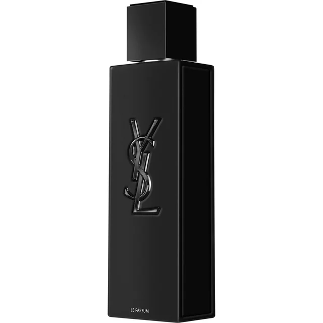
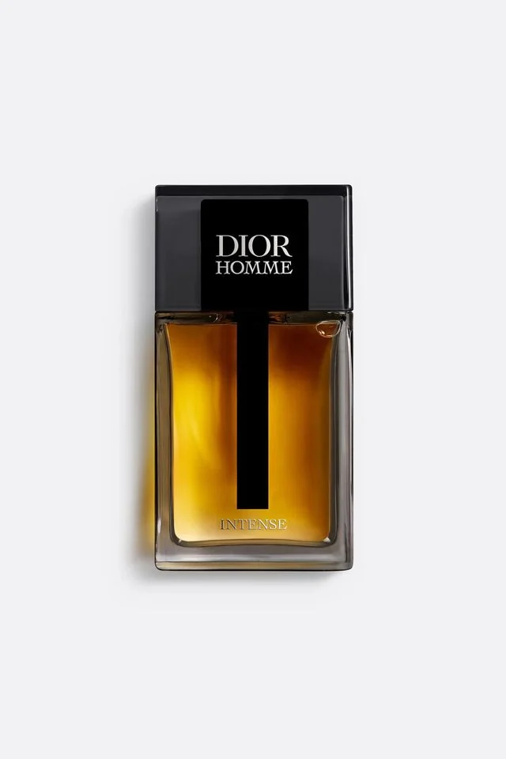
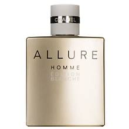

Identidade da marca
Fragrâncias que traduzem o estilo, os valores e a personalidade das grandes marcas de moda.
A união entre moda, luxo, identidade e o universo das fragrâncias.
Os perfumes designers são fragrâncias comercializadas por marcas que também atuam em outros segmentos, como moda, acessórios, cosméticos e artigos de luxo.
Grandes marcas como Dior, Chanel, Yves Saint Laurent e Louis Vuitton utilizam a perfumaria como uma extensão de sua identidade, traduzindo seus conceitos e estilos em experiências olfativas.
Diferentemente de muitas casas de nicho, as linhas designers tradicionais geralmente possuem maior distribuição e buscam alcançar um público mais amplo. Entretanto, algumas marcas também oferecem coleções exclusivas com preços elevados e propostas sofisticadas.
Fragrâncias que traduzem o estilo, os valores e a personalidade das grandes marcas de moda.
Grande reconhecimento no mercado e ampla presença em perfumarias e lojas especializadas.
Diversidade de fragrâncias para diferentes ocasiões, estações do ano e preferências pessoais.

Uma fragrância moderna que combina o frescor da bergamota, a flor de laranjeira e nuances amadeiradas.
Floral e amadeirado Site oficial ↗
Uma composição elegante e sofisticada, marcada pela íris, por nuances ambaradas e por uma base amadeirada.
Amadeirado e atalcado Site oficial ↗
Uma fragrância que equilibra o frescor do limão com a cremosidade da baunilha e do sândalo.
Cítrico e ambarado Site oficial ↗Conheça a tradição olfativa do Oriente Médio, suas criações autorais e suas interpretações de fragrâncias famosas.
Próxima categoria →